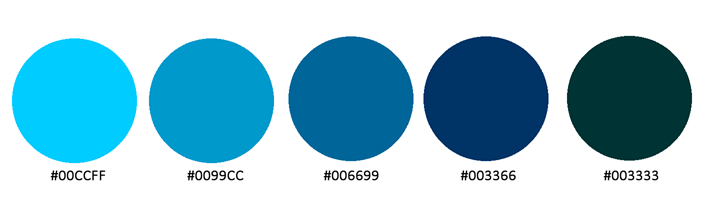
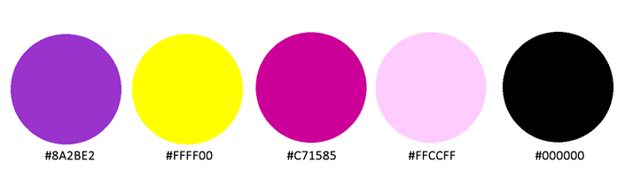
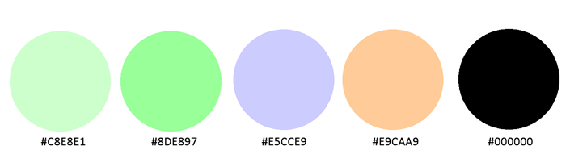
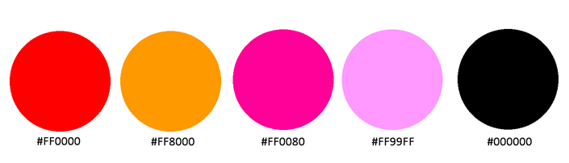
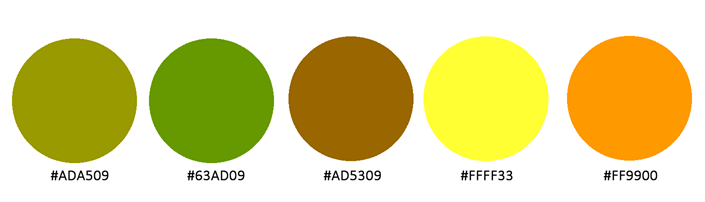

Monochromatic Color Theme: |
The following monochromatic, conservative color scheme might appeal to the upper-class. The blue is not only conservative in its connotation, but also is reminiscent of water and aquatics. I think this is a good choice for a yacht club. |
|  |
Split Color Theme: |
The following split design appealed to me since it incorporates 2 of my favorite hues. I think as a web designer I would opt for small amounts of bold color choices, and this theme reflects that. |
|  |
Baby Nursery Designer Color Theme: |
When I think of pastels, I think of babies. These hues evoke thoughts of cribs and mobiles, and I think they would be a good choice for a website of a baby nursery designer. |
|  |
Analogous Color Theme: |
The vibrant tones in this theme make me think of toy stores. The first 3 colors are analogous. This theme combines pinks for girls with reds and oranges for boys, with vibrant, exciting colors for all kids. |
|  |
Hipster Color Theme: |
The warm, earthy tones that are reminiscent of home decor of the 1970's, remind me of "hipsters." This theme would appeal to bearded men and chicks with tattoos and body piercings. I think a record store would be a good client for this color theme. |
|  |